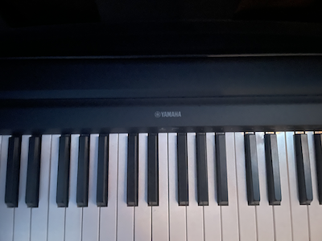

Hobbies
Learning Piano
I recently begun playing the piano. Unfortunately I am beginner, so all I offer is a small non-perfect snippet.
Song: Beethoven - Für Elise
Playing Video Games
Video Games
I play video games to pass time and have fun playing with friends. It can also be used to release stress of a hard days work. Although at times, it can make you irritated instead.
Ping Pong

For me, ping pong is something I do to pass time waiting for other classes to begin. Its become more fun as we play with new people and other friends. At times, it gets tiring.>